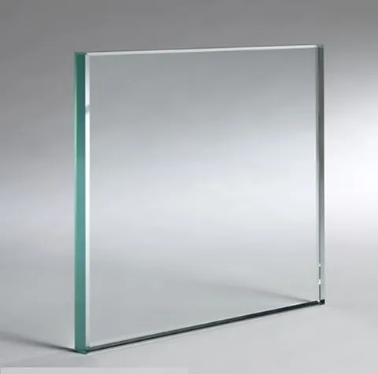
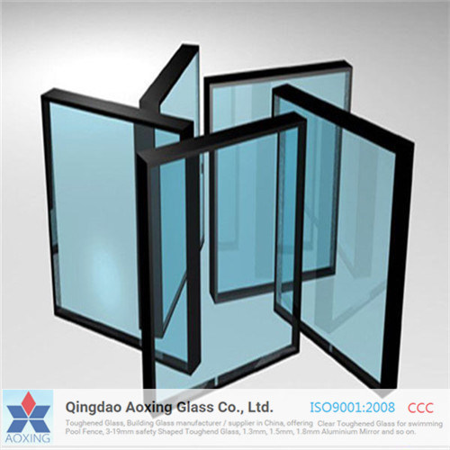
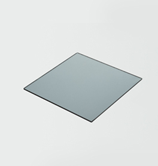

vidrio claro
Este tipo de vidrio queda muy bien con el contraste de las ventanas

vidrio azul
Este tipo de vidrio queda muy bien con el contraste de las ventanas

vidrio refleta plata
Este tipo de vidrio queda muy bien con el contraste de las ventanas

vidrio filtra
Este tipo de vidrio queda muy bien con el contraste de las ventanas